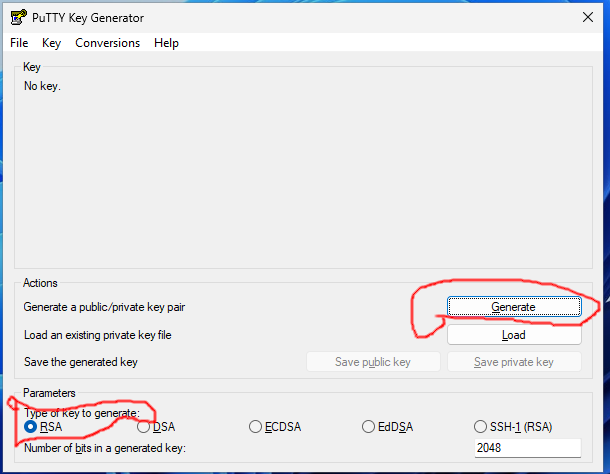
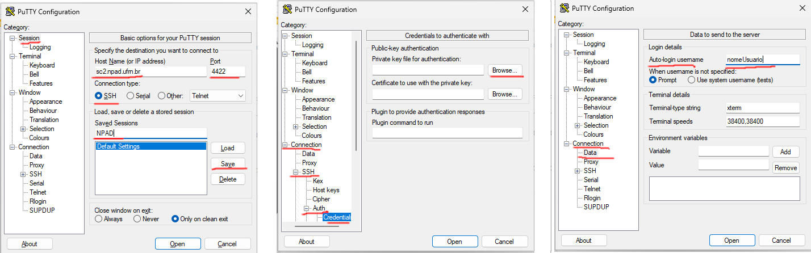

Tutorial do PuTTy¶
Nesses tutoriais foi utilizado o PuTTy na sua versão 0.78
Gerando um par de chaves público/privada tipo RSA¶
Procure nos seus aplicativos e abra o programa puttygen. Em Type of Key to generate selecione RSA. Clique em Generate.

Faça movimentos aleatórios com o mouse até preencher toda a barra verde. Quando isso acontecer irá aparecer a seguinte tela:

Debaixo de Public key for pasting into OpenSSH authorized keys file: Encontra-se a chave que você deve copiar colocar criar uma conta no NPAD. Lembre-se de salvar duas chaves, a publica e a privada. Você deve salvar as chaves clicando em Save public-key e Save private-key. Se você não colocar uma passphrase ele irá lhe alerta isso mas não é necessário colocar uma. LEMBRE-SE que se você colocar uma passphrase e esquece-la ou perder o par de chaves você terá que criar um novo par de chaves e adicionar uma nova chave.
Acessando o supercomputador através do PuTTy¶
Uma vez tendo feito o cadastro com a chave publica gerada anteriormente. É necessário configurar o PuTTy para realizar o login no supercomputador. Três configurações precisam ser feitas.
- Adicionar a chave privada que você criou com PuTTYgen em Connection -> SSH -> Auth -> Credentials
- Adicionar o seu nome de usuário cadastrado no NPAD em Connection -> Data
- Adicionar o hostname: sc2.npad.ufrn.br e port: 4422 em Session
Certifique-se que em Session, a caixa SSH em Connection type está marcada. Abaixo de Saved Sessions escreva um nome dessa sessão, como por exemplo NPAD. Clique em Save para salvar todas as configurações feitas até o momento. Dessa forma sempre que quiser acessar o NPAD através do PuTTy é só selecionar o nome da sessão, clicar em Load e depois no botão Open.
